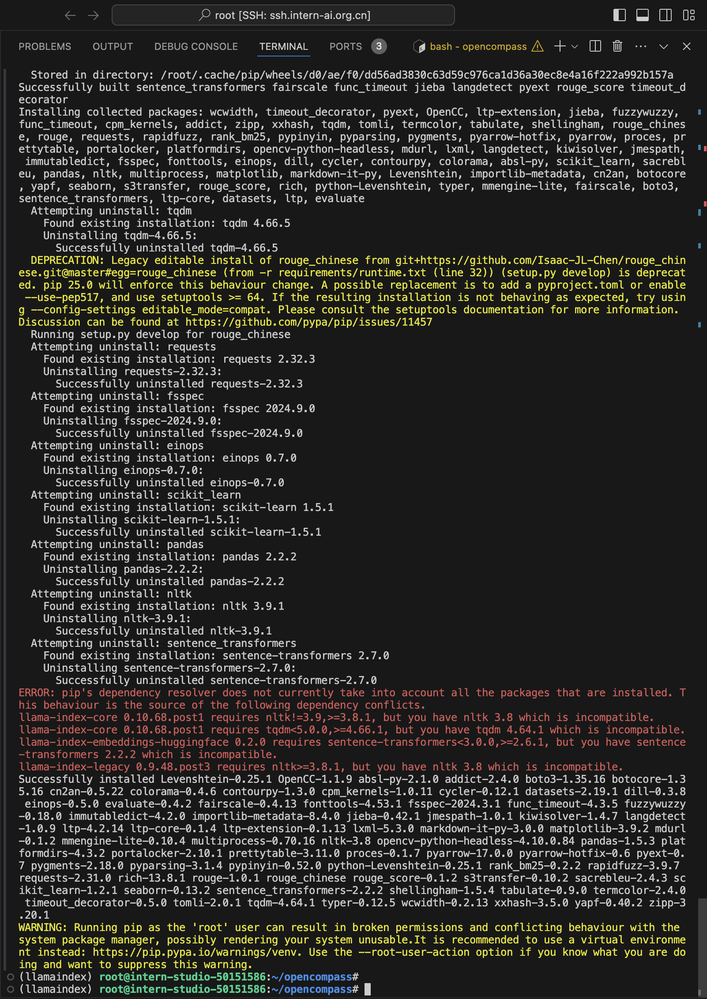
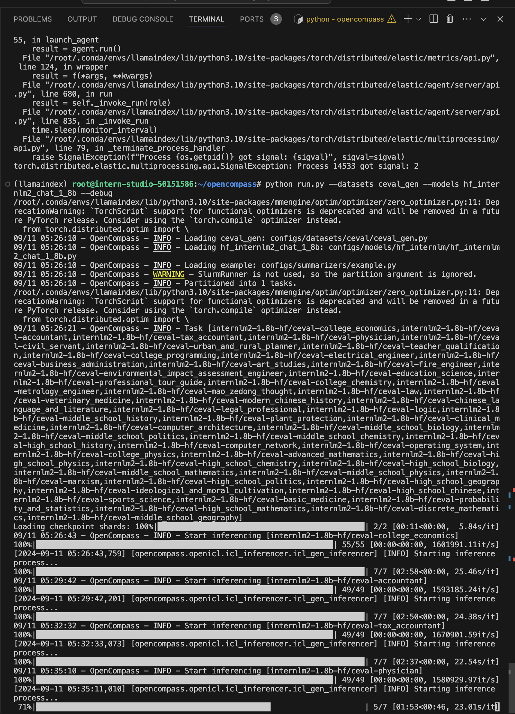

I reused the llamaindex environment from the LlamaIndex RAG assignment. Format is from top to bottom, with recording at the end.
First, I installed the OpenCompass package. After keyboard interrupting as I didn't activate the llamaindex environment, I obtained the following installation result:

Then I unzipped the dataset containing the files (top of picture), and for some reason pip install -e . installed everything but opencompass, so I re-ran that command to list all the configurations of models:
Then, after keyboard interrupting to record, I started evaluating with OpenCompass:

This recording is rather long; it's stopped midway. Note a small popup on the middle-right at some point in the video (I'm only recording a part of my screen and doing other InternLM-related stuff on the other part):
The end result: (note my directory structure's just "root" as I lost connection when the time until shutdown ran out)
And that's all!